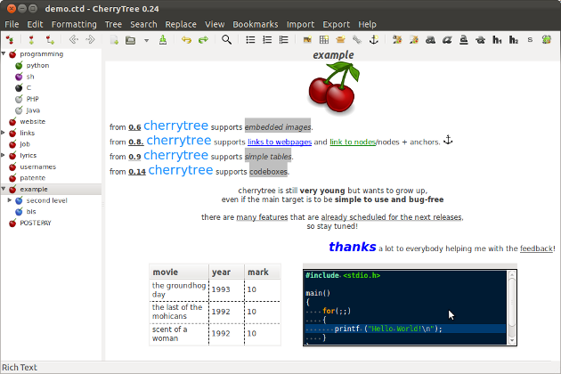

Created 星期六 23 六月 2012
@工具软件
推荐跨平台笔记软件CherryTree
前两天看见UbuntuHome发了这篇 [程序员专用笔记CherryTree], 下载下来试用了一阵之后，感觉很不错，于是在公司的电脑上就从minipad2切换过来; 家里的Linux上也装上了它，开始把我一些零散的笔记挪进去。
CherryTree是个树状笔记软件，有着其它类似软件的功能
- 支持富文本（粗体/斜体/等宽/下划线/链接/背景色/前景色）
- 支持类似HTML的h1..h3多级标题
- 支持无序列表/有序列表/TO-DO列表
- 支持嵌入图片
特色功能是：
- 支持嵌入表格
- 支持嵌入代码框（可以语法高亮哦）
- 扫描整个笔记本，生成文档目录
- 有丰富的导入功能，可以导入Basket, KeepNote, Leo, NoteCase, Tomboy, TreePad, TuxCards等笔记软件的文件
- 可将整个笔记本（或者其中一部分）导出成HTML，每个节点一个文件，都带有树状索引
另外，CherryTree是将整个笔记本保存为一个文件（sqlite格式或者xml格式），图片/表格这些都是在保存在里面的。
CherryTree采用python+gtk编写，也提供了windows binary包，安装比较省事。

为什么选择CherryTree？
（这一部分更多是描述个人偏好，不感兴趣可以跳过）
前面一篇博文里面说过，我用EverNote还是比较多的，但它主要还是用做”知识仓库“，存放比较系统化的一些内容。
但其实还有两个场景，都不太适合用EverNote：
一个是写东西 （authoring），比如写博客文章、写会议记录什么的，这要求编辑器的能力要比较强，比如能方便地调整章节、编辑表格什么的，之前我一直是用emacs org-mode来干这个的;
另一个场景是随手记点东西，有的是有待整理后放到笔记里，有的是临时的代码片段，有的只是在较短时间内的备忘（比如某台服务器的IP地址什么的），这种一般我会按照主题（比如Emacs，shell等，内容多了会再分子主题）。之前我在上班时主要是用flashpad/minipad2来做这个，在家里用Linux时，就一直没有什么趁手的工具，都是用Firefox扩展QuickFox Notes来应付。
flashpad/minipad2/quickfox notes这几个的缺点是：
- 都只支持纯文本，有时候很期望用加粗、颜色什么的来标识需要注意的内容，标题、链接什么的最好也有（倒是可以接受非所见即所得的方式，比如FloatNotes采用Markdown格式编写，以HTML方式呈现）;
- 都不支持嵌入图片，有时候截屏是比较简单方便的记录方式;
- flashpad/minipad2不跨平台;
- QuickFox Notes采用标签页来呈现所有的，内容多了之后，标签栏两头来回找，太麻烦了（以前我是将短期不太关系的内容放到“收藏夹”里面去了，而且还有个搜索框，觉得挺方便的。直到前几天我从奇怪Firefox同步的内容总是不全才发现这个“收藏夹”的英文原文是Archive，放进去的笔记是归档到本机文件系统去了，不会自动同步）
而且改用CherryTree的话，这两个场景都可以用同一个工具了。
-------------------------------------------------------------------------------------
之前不是使用flashpad/minipad2么?
抛弃flashpad/minipad2的原因是
但因为EverNote没有Linux版本（虽然有个Java版本的NixNote，但是体验不佳），加上公司的proxy禁止了EverNote客户端同步，导致我只能通过浏览器访问evernote.com来使用它。再考虑到现在霸气的G_fw导致的网速——所以我还是需要另外一个软件。
- FIXME
我就在公司电脑上(Windows XP)抛弃了之前在用的minipad2（之前又因 为minipad2又抛弃了曾经在博客上介绍过的flashpad（见介绍几个Windows下的小 工具））
{kind=link}